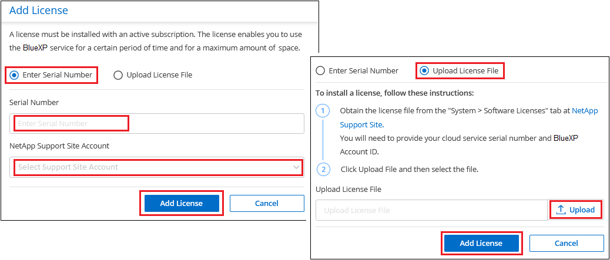

Los geht's
Los geht's
Lizenzierung für BlueXP Tiering einrichten
 Änderungen vorschlagen
Änderungen vorschlagen
Mit der Einrichtung von Tiering von Ihrem ersten Cluster beginnen Sie eine kostenlose 30-Tage-Testversion von BlueXP Tiering. Nach Ablauf der kostenlosen Testversion müssen Sie für BlueXP Tiering über ein Pay-as-you-go- oder ein Jahresabonnement von Ihrem Cloud-Provider auf dem Marketplace von, eine BYOL-Lizenz von NetApp oder eine Kombination beider Optionen zahlen.
Ein paar Notizen, bevor Sie weitere lesen:
-
Wenn Sie bereits ein Abonnement für BlueXP (PAYGO) auf dem Marketplace Ihres Cloud-Providers abonniert haben, werden Sie BlueXP Tiering auch für lokale ONTAP Systeme automatisch abonnieren. Auf der Registerkarte BlueXP Tiering On-Premises Dashboard sehen Sie ein aktives Abonnement. Sie müssen sich nicht erneut anmelden. Das Digital Wallet von BlueXP enthält ein aktives Abonnement.
-
Die BYOL BlueXP Tiering-Lizenz (ehemals als „Cloud Tiering“-Lizenz bezeichnet) ist eine Floating_ Lizenz, die Sie über mehrere lokale ONTAP-Cluster in Ihrem BlueXP Konto hinweg verwenden können. Das ist anders (und viel einfacher) als in der Vergangenheit, wo Sie für jeden Cluster eine FabricPool Lizenz gekauft haben.
-
Beim Tiering von Daten in StorageGRID fallen keine Gebühren an. Daher ist keine BYOL-Lizenz oder eine PAYGO-Registrierung erforderlich. Diese Tiered Daten zählen nicht auf die in Ihrer Lizenz erworbene Kapazität.
30 Tage kostenlos testen mit unserer
Wenn Sie keine BlueXP Tiering-Lizenz haben, beginnt eine kostenlose 30-Tage-Testversion von BlueXP Tiering bei der Einrichtung des Tiering auf den ersten Cluster. Nach Ablauf der 30-Tage-Testsoftware müssen Sie für BlueXP Tiering über ein Pay-as-you-go-Abonnement, ein Jahresabonnement, eine BYOL-Lizenz oder eine Kombination daraus zahlen.
Wenn die kostenlose Testversion endet und Sie keine Lizenz abonniert oder hinzugefügt haben, werden selten genutzte Daten von ONTAP nicht mehr in den Objekt-Storage verschoben. Alle zuvor gestuften Daten bleiben zugänglich, was bedeutet, dass Sie diese Daten abrufen und verwenden können. Beim Abrufen werden diese Daten aus der Cloud zurück in die Performance-Tier verschoben.
Verwenden Sie ein BlueXP Tiering PAYGO-Abonnement
Dank Pay-as-you-go-Abonnements über den Marketplace Ihres Cloud-Providers können Sie die Nutzung von Cloud Volumes ONTAP Systemen und vielen Cloud-Datenservices, wie z. B. BlueXP Tiering, lizenzieren.
Abonnieren im AWS Marketplace
Abonnieren Sie BlueXP Tiering über AWS Marketplace, um ein Pay-as-you-go-Abonnement für Daten-Tiering von ONTAP Clustern zu AWS S3 einzurichten.
-
Klicken Sie in BlueXP auf Mobilität > Tiering > On-Premises-Dashboard.
-
Klicken Sie im Abschnitt Marketplace Subscriptions unter Amazon Web Services auf Abonnieren und dann auf Weiter.
-
Melden Sie sich beim an "AWS Marketplace", Und melden Sie sich dann wieder auf der BlueXP Website, um die Registrierung abzuschließen.
Das folgende Video zeigt den Prozess:
Abonnieren im Azure Marketplace
Abonnieren Sie BlueXP Tiering über den Azure Marketplace, um ein Pay-as-you-go-Abonnement für Daten-Tiering von ONTAP Clustern zu Azure Blob Storage einzurichten.
-
Klicken Sie in BlueXP auf Mobilität > Tiering > On-Premises-Dashboard.
-
Klicken Sie im Abschnitt Marketplace Subscriptions unter Microsoft Azure auf Abonnieren und dann auf Weiter.
-
Melden Sie sich beim an "Azure Marketplace", Und melden Sie sich dann wieder auf der BlueXP Website, um die Registrierung abzuschließen.
Das folgende Video zeigt den Prozess:
Abonnieren über den Google Cloud Marketplace
Abonnieren Sie BlueXP Tiering über Google Cloud Marketplace, um ein Pay-as-you-go-Abonnement für Daten-Tiering von ONTAP Clustern auf Google Cloud Storage einzurichten.
-
Klicken Sie in BlueXP auf Mobilität > Tiering > On-Premises-Dashboard.
-
Klicken Sie im Abschnitt Marketplace Subscriptions unter Google Cloud auf Abonnieren und dann auf Weiter.
-
Melden Sie sich beim an "Google Cloud Marketplace", Und melden Sie sich dann wieder auf der BlueXP Website, um die Registrierung abzuschließen.
Das folgende Video zeigt den Prozess:
Verwenden Sie einen Jahresvertrag
Bezahlen Sie für BlueXP Tiering jährlich durch den Erwerb eines Jahresvertrags. Jahresverträge sind mit Laufzeiten von 1, 2 oder 3 Jahren erhältlich.
Wenn Sie inaktive Daten mit Tiering in AWS verlagern, können Sie einen Jahresvertrag des abonnieren "AWS Marketplace Seite". Wenn Sie diese Option verwenden möchten, richten Sie Ihr Abonnement auf der Marketplace-Seite ein und dann "Verbinden Sie das Abonnement mit Ihren AWS Zugangsdaten".
Wenn Sie inaktive Daten mit Tiering in Azure verschieben, können Sie einen Jahresvertrag des abonnieren "Azure Marketplace Seite". Wenn Sie diese Option verwenden möchten, richten Sie Ihr Abonnement auf der Marketplace-Seite ein und dann "Ordnen Sie das Abonnement Ihren Azure-Zugangsdaten zu".
Jährliche Verträge werden derzeit beim Tiering in Google Cloud nicht unterstützt.
Verwenden Sie eine BlueXP Tiering BYOL-Lizenz
Mit den Bring-Your-Own-License-Lizenzen von NetApp erhalten Sie Vertragsbedingungen mit 1, 2 oder 3 Jahren. Die BYOL BlueXP Tiering-Lizenz (ehemals als „Cloud Tiering“-Lizenz bezeichnet) ist eine Floating_-Lizenz, die Sie über mehrere lokale ONTAP-Cluster in Ihrem BlueXP Konto hinweg verwenden können. Die in Ihrer BlueXP Tiering-Lizenz definierte Gesamtkapazität wird von allen* Ihrer On-Premises-Cluster gemeinsam genutzt, wodurch die erstmalige Lizenzierung und Verlängerung vereinfacht werden. Die Mindestkapazität für eine Tiering-BYOL-Lizenz beträgt 10 tib.
Wenn Sie keine BlueXP Tiering-Lizenz besitzen, kontaktieren Sie uns, um eine zu kaufen:
-
Mailto:ng-cloud-tiering@netapp.com?Subject=Lizenzierung[E-Mail senden, um eine Lizenz zu erwerben].
-
Klicken Sie rechts unten auf das Chat-Symbol von BlueXP, um eine Lizenz anzufordern.
Wenn Sie optional eine nicht zugewiesene Node-basierte Lizenz für Cloud Volumes ONTAP haben, die Sie nicht verwenden werden, können Sie sie in eine BlueXP Tiering-Lizenz mit derselben Dollar-Äquivalenz und demselben Ablaufdatum konvertieren. "Weitere Informationen finden Sie hier".
Über die Digital-Wallet-Seite von BlueXP können Sie die Tiering-BYOL-Lizenzen für BlueXP managen. Sie können neue Lizenzen hinzufügen und vorhandene Lizenzen aktualisieren.
BlueXP Tiering BYOL-Lizenzierung ab 2021
Die neue BlueXP Tiering-Lizenz wurde im August 2021 für Tiering-Konfigurationen eingeführt, die in BlueXP mithilfe des BlueXP Tiering Service unterstützt werden. BlueXP unterstützt derzeit Tiering in folgenden Cloud-Storage: Amazon S3, Azure Blob Storage, Google Cloud Storage, NetApp StorageGRID und S3-kompatiblen Objekt-Storage.
Die FabricPool-Lizenz, die Sie in der Vergangenheit für das Tiering von On-Premises-ONTAP-Daten in die Cloud verwendet haben, wird nur für ONTAP-Bereitstellungen in Websites gehalten, die keinen Internetzugang haben (auch als „dunkle Standorte“ bezeichnet), und für das Tiering von Konfigurationen in IBM Cloud-Objektspeicher. Wenn Sie diese Art der Konfiguration verwenden, installieren Sie eine FabricPool Lizenz auf jedem Cluster mithilfe von System Manager oder der ONTAP CLI.

|
Beachten Sie, dass für Tiering zu StorageGRID keine FabricPool oder BlueXP Tiering-Lizenz erforderlich ist. |
Wenn Sie derzeit die FabricPool-Lizenzierung verwenden, sind Sie erst betroffen, wenn die FabricPool-Lizenz das Ablaufdatum oder die maximale Kapazität erreicht hat. Wenden Sie sich an NetApp, wenn Sie Ihre Lizenz aktualisieren müssen, oder an eine frühere Version, um sicherzustellen, dass die Möglichkeit des Tiering von Daten in die Cloud nicht unterbrochen wird.
-
Wenn Sie eine Konfiguration nutzen, die in BlueXP unterstützt wird, werden Ihre FabricPool Lizenzen in BlueXP Tiering Lizenzen konvertiert, und sie werden im Digital Wallet von BlueXP angezeigt. Wenn diese anfänglichen Lizenzen abgelaufen sind, müssen Sie die BlueXP Tiering-Lizenzen aktualisieren.
-
Wenn Sie eine Konfiguration verwenden, die in BlueXP nicht unterstützt wird, verwenden Sie weiterhin eine FabricPool-Lizenz. "Erfahren Sie, wie Sie für das Tiering mit System Manager lizenzieren".
Hier sind einige Dinge, die Sie über die beiden Lizenzen wissen müssen:
| BlueXP Tiering Lizenz | FabricPool Lizenz |
|---|---|
Es handelt sich um eine „_Floating_Lizenz“, die Sie über mehrere ONTAP Cluster vor Ort hinweg verwenden können. |
Es handelt sich um eine Lizenz pro Cluster, die Sie für every Cluster erwerben und lizenzieren. |
Sie ist in der Digital Wallet von BlueXP registriert. |
Er wird auf einzelne Cluster mithilfe von System Manager oder der ONTAP CLI angewendet. |
Die Tiering-Konfiguration und das Management erfolgen über den BlueXP Tiering-Service in BlueXP. |
Die Tiering-Konfiguration und das Management erfolgen über System Manager oder über die ONTAP CLI. |
Sobald Sie konfiguriert sind, können Sie den Tiering Service mit der kostenlosen Testversion 30 Tage lang ohne Lizenz verwenden. |
Nach der Konfiguration können Sie das Tiering der ersten 10 TB an Daten kostenlos durchführen. |
Ihre BlueXP Tiering-Lizenzdatei anfordern
Nachdem Sie Ihre BlueXP Tiering-Lizenz erworben haben, aktivieren Sie die Lizenz in BlueXP entweder durch Eingabe der BlueXP Tiering-Seriennummer und des NSS-Kontos oder durch Hochladen der NF-Lizenzdatei. Die folgenden Schritte zeigen, wie Sie die Lizenzdatei NLF abrufen können, wenn Sie diese Methode verwenden möchten.
Sie müssen die folgenden Informationen haben, bevor Sie beginnen:
-
Seriennummer für BlueXP Tiering
Suchen Sie diese Nummer in Ihrem Auftrag, oder wenden Sie sich an das Account Team, um diese Informationen zu erhalten.
-
BlueXP Konto-ID
Sie können Ihre BlueXP-Konto-ID finden, indem Sie oben in BlueXP das Dropdown-Menü Konto auswählen und dann neben Ihrem Konto auf Konto verwalten klicken. Ihre Account-ID wird auf der Registerkarte „Übersicht“ angezeigt.
-
Melden Sie sich beim an "NetApp Support Website" Klicken Sie anschließend auf Systeme > Softwarelizenzen.
-
Geben Sie die Seriennummer Ihrer BlueXP Tiering Lizenz ein.

-
Klicken Sie in der Spalte Lizenzschlüssel auf NetApp Lizenzdatei abrufen.
-
Geben Sie Ihre BlueXP-Konto-ID ein (dies wird als Mandanten-ID auf der Support-Website bezeichnet) und klicken Sie auf Absenden, um die Lizenzdatei herunterzuladen.

Fügen Sie BlueXP Tiering BYOL-Lizenzen zu Ihrem Konto hinzu
Nachdem Sie eine BlueXP Tiering-Lizenz für Ihr BlueXP Konto erworben haben, müssen Sie die Lizenz zu BlueXP hinzufügen, um den BlueXP Tiering Service zu nutzen.
-
Klicken Sie auf Governance > Digital Wallet > Data Services Licenses.
-
Klicken Sie Auf Lizenz Hinzufügen.
-
Geben Sie im Dialogfeld „Lizenz hinzufügen“ die Lizenzinformationen ein, und klicken Sie auf Lizenz hinzufügen:
-
Wenn Sie über die Seriennummer der Tiering-Lizenz verfügen und Ihr NSS-Konto kennen, wählen Sie die Option Seriennummer eingeben aus, und geben Sie diese Informationen ein.
Wenn Ihr NetApp Support Site Konto nicht in der Dropdown-Liste verfügbar ist, "Fügen Sie das NSS-Konto zu BlueXP hinzu".
-
Wenn Sie über die Tiering-Lizenzdatei verfügen, wählen Sie die Option Lizenzdatei hochladen aus, und befolgen Sie die Anweisungen, um die Datei anzuhängen.

-
BlueXP fügt die Lizenz hinzu, sodass Ihr BlueXP Tiering-Service aktiv ist.
Aktualisieren einer BlueXP Tiering BYOL-Lizenz
Wenn die Lizenzlaufzeit kurz vor dem Ablaufdatum steht oder die lizenzierte Kapazität das Limit erreicht, werden Sie über BlueXP Tiering benachrichtigt.

Dieser Status wird auch auf der BlueXP Digital Wallet-Seite angezeigt.

Sie können Ihre BlueXP Tiering-Lizenz vor dem Ablauf aktualisieren, damit das Tiering Ihrer Daten in die Cloud nicht unterbrochen wird.
-
Klicken Sie auf das Chat-Symbol rechts unten in BlueXP, um eine Verlängerung Ihrer Laufzeit oder zusätzliche Kapazität für Ihre BlueXP Tiering-Lizenz für die jeweilige Seriennummer anzufordern.
Nachdem Sie für die Lizenz bezahlt und sie auf der NetApp Support-Website registriert ist, aktualisiert BlueXP automatisch die Lizenz im Digital Wallet von BlueXP. Auf der Seite „Data Services Licenses“ wird die Änderung in 5 bis 10 Minuten dargestellt.
-
Wenn BlueXP die Lizenz nicht automatisch aktualisieren kann, müssen Sie die Lizenzdatei manuell hochladen.
-
Das können Sie Beziehen Sie die Lizenzdatei über die NetApp Support-Website.
-
Klicken Sie auf der Seite BlueXP Digital Wallet auf der Registerkarte Data Services Licenses auf
 Klicken Sie für die Serviceseriennummer, die Sie aktualisieren, auf Lizenz aktualisieren.
Klicken Sie für die Serviceseriennummer, die Sie aktualisieren, auf Lizenz aktualisieren.
-
Laden Sie auf der Seite Update License die Lizenzdatei hoch und klicken Sie auf Update License.
-
BlueXP aktualisiert die Lizenz, sodass Ihr BlueXP Tiering-Service weiterhin aktiv bleibt.
BlueXP Tiering-Lizenzen werden auf Cluster in speziellen Konfigurationen angewendet
Bei den ONTAP-Clustern in den folgenden Konfigurationen können BlueXP Tiering-Lizenzen genutzt werden, die Lizenz muss sich jedoch anders anwenden als bei Single-Node-Clustern, bei HA konfigurierten Clustern, Clustern in Tiering Mirror-Konfigurationen und MetroCluster-Konfigurationen mithilfe von FabricPool Mirror:
-
Cluster, die zu IBM Cloud Object Storage Tiering sind
-
Cluster, die in „Dark Sites“ installiert sind
Prozess für vorhandene Cluster mit einer FabricPool-Lizenz
Wenn Sie "Erkennen Sie jeden dieser speziellen Cluster-Typen in BlueXP Tiering"BlueXP Tiering erkennt die FabricPool Lizenz und fügt die Lizenz in die Digital Wallet von BlueXP ein. Diese Cluster werden weiterhin Daten-Tiering wie gewohnt fortsetzen. Wenn die FabricPool Lizenz abläuft, müssen Sie eine BlueXP Tiering Lizenz erwerben.
Prozess für neu erstellte Cluster
Wenn Sie typische Cluster in BlueXP Tiering entdecken, konfigurieren Sie Tiering über die BlueXP Tiering-Schnittstelle. In diesen Fällen geschehen die folgenden Aktionen:
-
Die „übergeordnete“ BlueXP Tiering-Lizenz überwacht die Kapazität, die für das Tiering von allen Clustern verwendet wird, um sicherzustellen, dass die Lizenz über genügend Kapazität verfügt. Die Anzeige der lizenzierten Gesamtkapazität und des Ablaufdatums ist im Digital Wallet von BlueXP enthalten.
-
Auf jedem Cluster wird automatisch eine „Child“ Tiering-Lizenz installiert, um mit der übergeordneten Lizenz zu kommunizieren.

|
Die im System Manager oder in der ONTAP CLI für die „untergeordnete“ Lizenz angegebene lizenzierte Kapazität und das Ablaufdatum sind keine echten Informationen. Bedenken Sie daher nicht, wenn die Informationen nicht identisch sind. Diese Werte werden intern von der Tiering-Software BlueXP gemanagt. Die tatsächlichen Informationen werden in der digitalen Brieftasche von BlueXP nachverfolgt. |
Für die beiden oben aufgeführten Konfigurationen müssen Sie Tiering mithilfe von System Manager oder der ONTAP CLI konfigurieren (nicht über die BlueXP Tiering-Schnittstelle). In diesen Fällen müssen Sie die „Child“-Lizenz also manuell über die BlueXP Tiering-Schnittstelle auf diese Cluster übertragen.
Da Daten für Tiering-Spiegelkonfigurationen auf zwei unterschiedliche Objekt-Storage-Standorte verteilt sind, müssen Sie für das Tiering von Daten an beide Standorte eine Lizenz mit genügend Kapazität erwerben.
-
Installieren und konfigurieren Sie Ihre ONTAP Cluster mithilfe von System Manager oder ONTAP CLI.
Konfigurieren Sie Tiering jetzt nicht.
-
"Sie erwerben eine BlueXP Tiering-Lizenz" Für die Kapazität, die für das neue Cluster oder die Cluster benötigt wird.
-
In BlueXP "Erweitern Sie das Digital Wallet von BlueXP um die Lizenz".
-
Durch BlueXP Tiering "Ermitteln Sie die neuen Cluster".
-
Klicken Sie auf der Seite Cluster auf
Wählen Sie für den Cluster die Option Lizenz bereitstellen aus.
-
Klicken Sie im Dialogfeld „Deploy License“ auf Bereitstellen.
Die untergeordnete Lizenz wird auf dem ONTAP Cluster bereitgestellt.
-
Kehren Sie zu System Manager oder zur ONTAP CLI zurück und richten Sie Ihre Tiering-Konfiguration ein.